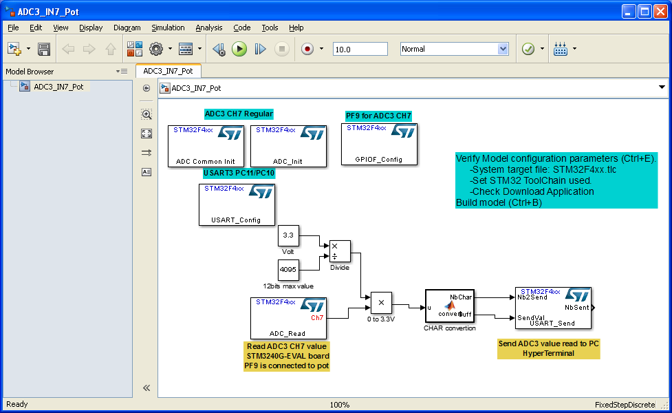

ADC Common Initialization model
Model used to configure global parameters for STM32F4 Analog to Digital Conversion ADC1, ADC2 or ADC3.
Contents
S-Function
Nb Input: 0
Nb Output: 0

ADC parameters setting
ADC operating mode
Define how ADCs acquisitions are linked.
Clock frequency prescaler
Clock frequency ADC acquisition division.
Direct Memory Access mode
DMA Access mode.
- Disable : No DMA
- mode1 : On each DMA request (one data item is available), a half-word representing an ADC-converted data item is transferred.
- mode2 : On each DMA request (two data items are available) two half-words representing two ADC-converted data items are transferred as a word.
- mode3 : This mode is similar to the DMA mode 2. The only differences are that the on each DMA request (two data items are available) two bytes representing two ADC converted data items are transferred as a half-word.
Delay between 2 sampling phases
From 5 cycles to 20 cycles.
ADC convertion starts after a delay of several ADC clock cycles
Example
ADC configuration example.
This example is based on STM3240G-EVAL board. Analog-to-digital converter (ADC3) reads potentiometer value from PortF-Pin9.

ADC3 configuration for regular channels. One channel, Continuous conversion mode, No DMA.
Channel 7 is regular configured
PortF Pin9 is analog mode configured.
Example with interrupt
Watchdog guarded ADC configuration example.
This example is based on STM3240G-EVAL board. Analog-to-digital converter (ADC3) reads potentiometer value from PortF-Pin9 and send it through USART when watchdog interrupt occures.
ADC3 configuration for regular channels. One channel, Continuous conversion mode, No DMA.
Low and High threshold are configured for channel 7 single regular channel
PortF Pin9 is analog mode configured.
Interrupt Watchdog and OVR are configured for ADC3

Default ADC handler function name is used. It is configured into the startupt file. It is possible that stm32f4xx_it.c file (/src) has to be modified.